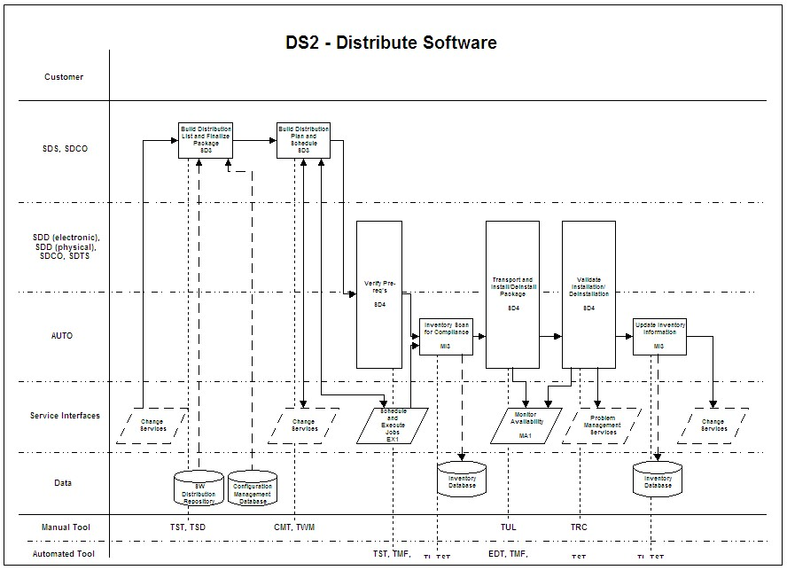

| Example: IT Service Design |
 |
|
Relationships
| Related Elements |
|---|
Main Description
DS2 - Distribute SoftwareService DescriptionThis service performs the delivery of software to a managed element. It begins with a software package (created in the DS1 - Maintain Software Packages service) already resident in the software distribution repository and wraps a distribution script around the package. It transports and validates the installation. Upon a successful distribution, the inventory database is updated to reflect the changed status of the element.Service Customers1. Distributed Systems Management2. APM 3. ECM Service Interfaces1. Change Services. Requests for distributions will be controlled via Change Services. In addition, distribution schedules will be coordinated with the global change calendar to avoid any conflicts.2. Schedule and Execute Jobs (EX1). Software that is to be periodically refreshed may be triggered and monitored by the Schedule and Execute Jobs service. Scheduled pre-distribution inventory scanning may also be handled by this service. 3. Monitor Availability (MA1). The distribution of software and the validation of the installation may be monitored for errors using the Monitor Availability service. 4. Problem Management Services. Errors encountered during distribution, installation or validation may be recorded and managed by Problem Management Services. Service Activities1. A change request indicates a desire for software distribution. The change request must include which package is to be distributed, which elements are targeted to receive the package, and a desired timeframe for the distribution. The package is retrieved from the software distribution repository and the final package, complete with distribution scripts, is created. Input from the configuration management repository is used to validate the desired configuration of targeted elements (SD3).2. The distribution plan is created taking into account network routing, optimum distribution path, as well as access to the necessary servers, workstations and/or laptops and so forth. The post-installation checklist is created. Scheduling information is retrieved from Change Services to ensure that no other planned change activities will affect the distribution (SD3). 3. Any resource requirements are determined and scheduled. Transport pre-req.’s are validated (SD4) 4. An inventory scan is executed in order to ensure that no unauthorized changes to the configuration have been made since the previous inventory scan (MI3). 5. The transport is effected and installation or de-installation procedures and/or scripts are executed (SD4). 6. The installation is checked for normal completion by reviewing a plan-provided checklist for items such as program file location, file size, accurate configuration, etc. Functional tests that validate the installation are performed. Any non-successful completion will invoke event management (MA1) or Problem Management Services as necessary (SD4). 7. Upon successful completion, an inventory scan of the target elements is performed to ensure that the inventory database provides an accurate picture of the changed elements (MI3). Change Services are informed of the status of the distribution. Service Roles1. SDS - Software Distribution Scheduler2. SDD - Software Distributor 3. SDCO - Software Distribution Coordinator 4. SDTS - Software Distribution Technical Specialist 5. AUTO - Automation Service Tools1. TST - Tivoli Scripting Tool2. TSD - Tivoli Software Distribution 3. CMT - Change Ticket Tool 4. TWM - Tivoli Workload Manager 5. TMF - Tivoli Management Framework 6. TI - Tivoli Inventory 7. TUL - Tivoli User Link 8. EDT - Encryption/Decryption Tool 9. TRC - Tivoli Remote Control Service Flow: |
| © Copyright IBM Corp. 1987, 2012 All Rights Reserved Property of IBM These materials are intended only for use as part of an IBM engagement |